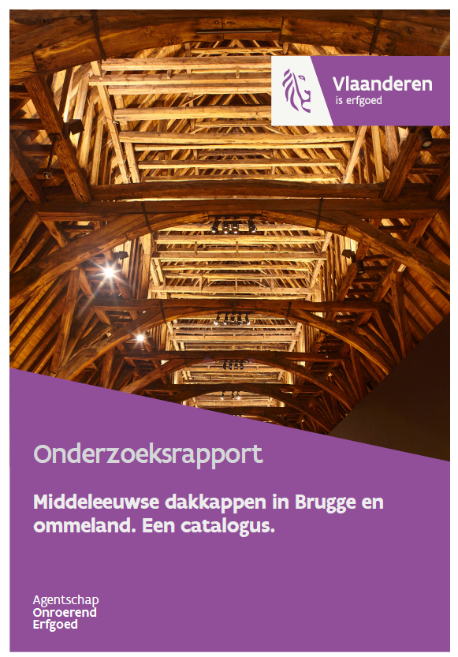

Middeleeuwse dakkappen in Brugge en ommeland. Een catalogus
Kristof Haneca 
Vincent Debonne
28/06/2022

Welkom!
Welkom bij de online versie van Middeleeuwse dakkappen in Brugge en ommeland. Een catalogus. Dit onderzoeksrapport werd in 2018 gepubliceerd door het agentschap Onroerend Erfgoed en is als pdf te downloaden op de Open Archives Repository (OAR).
Met deze online versie willen we kleine aanpassingen aan de originele uitgave, nieuwe analyses en interpretaties - op basis van recente, wetenschappelijke ontwikkelingen - sneller ontsluiten. De basis van deze cataloguus blijft de originele uitgave, maar hier kan je steeds de meest actuele versie raadplegen.
Citeren
Gelieve te citeren als:
Van Eenhooge D., Debonne V. & Haneca K. (2022-06-28). Middeleeuwse dakkappen in Brugge en ommeland. Een catalogus. Onderzoeksrapport agentschap Onroerend Erfgoed, Brussel. https://hanecakr.github.io/historischeHoutconstructies/
Oorspronkelijke gepubliceerd als:
Van Eenhooge D., Debonne V. & Haneca K. (2018). Middeleeuwse dakkappen in Brugge en ommeland. Een catalogus. Onderzoeksrapporten agentschap Onroerend Erfgoed 97, ISSN 1371-4678, Brussel. doi: https://doi.org/10.55465/FRGR4656.
Samenvatting
Dankzij de uitzonderlijk goede bewaring van het historisch stadslandschap vindt men in Brugge nog talrijke dakkappen uit de middeleeuwen en nieuwe tijd. In deze catalogus wordt de typologie en datering van in totaal 148 dakkappen - gekend uit de literatuur of ontdekt en onderzocht tijdens werfinspecties door het agentschap Onroerend Erfgoed van de Vlaamse Overheid - beschreven. De datering is in 59 gevallen gebaseerd op een dendrochronologische analyse.
Deze catalogus omvat niet alleen dakkappen van beroemde historische gebouwen in Brugge (hallen, kerken, hospitalen) maar ook van talrijke woonhuizen. De oudste kappen in deze catalogus zijn sporenkappen zonder langsverbinding uit de eerste decennia van de 13de eeuw. Opvallend is dat dit type kap tot in de 15de eeuw werd opgetrokken. De kap van de centrale ziekenzaal van het Sint-Janshospitaal, opgericht in 1226-1241d, is de oudste bewaarde sporenkap met flieringen op schaargebinten in de Lage Landen. Jongere kappen met schaargebinten en flieringen of gordingen situeren zich in de 16de eeuw. Zo biedt deze catalogus een overzicht van de evolutie in kapconstructies tijdens de late middeleeuwen in Brugge. De Brugse kappen schrijven zich in in de globale evolutie van dakkappen in de Lage Landen, al zijn er ook kappen aangetroffen die behoren tot eerder zeldzame types waarvoor parallellen ook in Noord-Frankrijk moeten worden gezocht.
Summary
Due to the exceptional preservation of the historical cityscape in Bruges, numerous roof constructions from the Middle Ages up to the early modern period can still be found in historical buildings. In this catalogue the typology and chronometric dating of 148 roof constructions – known from literature or discovered during site inspections by Flanders Heritage Agency – are described. In 59 cases the dating of the roofs is based on a dendrochronological analysis.
This catalogue not only includes the roof constructions of renowned historical buildings in Bruges (halls, churches, hospitals) but also numerous residential houses. The oldest roofs in this catalogue are common rafter roofs without longitudinal bracing, dating from the first decennia of the 13th century. It is striking to see that this type of roof was built until the 15th century. The roof of the central sick ward l of St. John’s hospital, built in 1226-1241d, is the oldest preserved rafter roof in the Low Countries with roof plates on trusses. More recent roof constructions with trusses and roof plates or purlins date from the 16th century. As such, this catalogue provides an overview of the evolution in roof building during the late Middle Ages in Bruges. The Bruges roofs are embedded in the overall evolution of roof constructions in the Low Countries, although a number of roofs proved to belong to rather rare types for which parallels can be found in Northern-France.
Résumé
Grace à la conservation exceptionnelle du paysage bâti du centre historique, on retrouve à Bruges des nombreuses charpentes datant du Moyen Âge et du début de l’époque moderne. Ce catalogue décrit la typologie et la datation de 148 charpentes, connues par la littérature ou découvertes lors de visites par l’Agence du Patrimoine de Flandre. Dans 59 des cas, la datation se fonde sur une analyse dendrochronologique.
Ce catalogue n’inclut pas seulement les charpentes de bâtiments historiques renommés (halles, églises, hôpitaux), mais contient aussi celles de nombreuses maisons privées. Les plus anciens toits décrits ici sont les charpentes à chevrons formant fermes sans contreventement longitudinal, datant des premières décennies du 13ème siècle. À Bruges, ce type de construction est en usage jusqu’au 15ème siècle. La charpente de la salle centrale de l’hôpital Saint-Jean, érigée en 1226-1241, est constituée de sablières soutenues par des portiques surélevés, c’est la plus ancienne charpente de ce type connue dans les anciens Pays-Bas. Des charpentes plus récentes à portiques et sablières ou pannes datent du 16ème siècle. Ce catalogue offre donc une vue d’ensemble de l’évolution de la charpenterie à Bruges au Moyen Âge central et tardif. Les toits brugeois s’inscrivent dans l’évolution générale des charpentes dans les anciens Pays-Bas, bien qu’un certain nombre est d’une typologie assez rare pour lesquelles des parallèles doivent être recherchés dans le nord de la France.